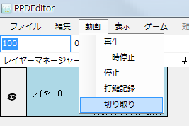
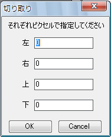

首先，测量目标视频（的歌曲）的BPM。
BPM表示每分钟的节拍数，也就是歌曲的速度（数值越大，节奏越快）。
PPDEditor附带名为BPM测量的BPM测量功能。
如果测量不准，可以试着在Google等网站搜索“曲名 BPM”。
另外，也有像“MixMeister BPM Analyzer”这样分析mp3音源并自动计算BPM的第三方免费软件。
不过，这些数值的可信度有限，所以最好还是手动测量一次，确认是否一致。
BPM测量好了。
将测量得到的BPM输入到工具箱最左边的文本框中。
（鼠标悬停时会显示BPM提示的那个文本框）

进行视频的裁剪设置。
当前视频的尺寸显示在属性窗口中。

PPD的窗口尺寸为16:9（800*450px）。
因此，对于16:9的视频源无需进行裁剪设置，
但对于其他视频源，需要进行设置以固定宽高比。
例如，常见的情况是512*384px（宽高比4:3）的视频上下带有黑边。
这种情况下，去掉黑边后通常就是16:9的视频源，因此要进行去除黑边的设置。
首先，选择 视频→剪切画面。

会显示以下窗口。

计算需要去掉的黑边的高度。
设黑边的高度为black_height，视频的宽度为movie_width，高度为movie_height。
则必须满足以下方程。
movie_width:movie_height-2*black_height=16:9
⇔16*(movie_height-2*black_height)=9*movie_width
⇔black_height=1/2(movie_height-9/16*movie_width)
……
可以用下面的表单进行计算。
将上面的黑边高度输入到刚才剪切窗口的上和下中，然后点击确定。
视频就会被裁剪，以16:9显示。
另一个例子是，对于没有黑边的512*384px（4:3）视频源，想在左右添加黑边以保持（4:3）的宽高比。
这种情况下，请在左和右中输入-100。（上和下为0）
显示设置文件编写器并输入信息。

缩略图开始时间、缩略图结束时间、开始时间、结束时间，点击右侧的三角并选择“从时间轴读取”，
即可输入视频的当前时间。
缩略图开始时间是在PPD的菜单画面中开始播放的时间。建议设为副歌的开始时间。
缩略图结束时间是在PPD的菜单画面中结束播放的时间。设为副歌的结束时间等即可。
开始时间是游戏中视频的开始时间。因视频而异，通常设为0即可。
如果视频开头比较突然，可以用-1、-2等推迟视频的开始。
结束时间是游戏中视频的结束时间。设为视频的结尾即可。
各难度请随意设定，可以指定自己想显示的内容。目前一般以★×○（○为数字）的形式居多。
也可以在发布前再决定。
BPM中请填入测量得到的BPM。
视频的各剪切值，请输入刚才设置的视频裁剪值。如果为0，请全部输入0。
在这里，先保存一次工程。
如果是使用新建工程创建的工程，工程已经存在，请按Ctrl+S或选择 文件→覆盖保存工程。
以下是未使用新建工程进行设置时的保存方法。
选择 文件→保存工程。

会显示对话框，将文件名设为“曲名.ppdproj”并保存。

下次起选择“覆盖保存工程”即可覆盖保存。
另外，打开工程时，请选择保存的“曲名.ppdproj”。
接下来，放置标记。
下一步